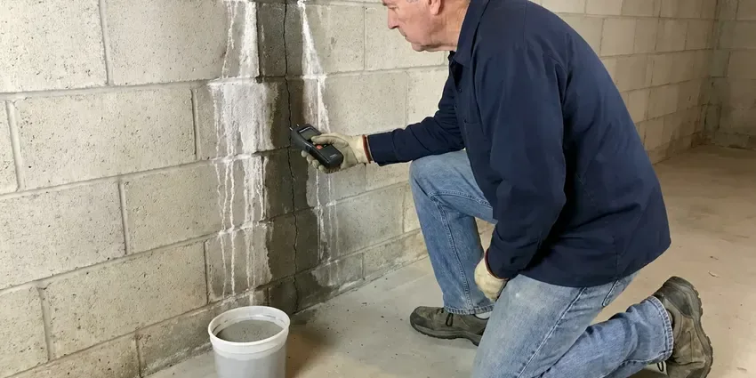

Sump Pump Maintenance in Keizer, OR
Protect your Keizer home from water damage with professional sump pump maintenance from JFL Plumbing. Our team ensures your system is ready for whatever the Oregon weather brings.
- Battery Backup Testing
- Expert Oregon Plumbers
- Fast, Same-Day Service
- Accurate Troubleshooting

Don't Wait for a Flood, Book Sump Pump Maintenance in Keizer, OR.
Call today and we will check your pump, float, valve and backup system.
Essential Sump Pump Maintenance for Your Keizer, OR Home
JFL Plumbing specializes in thorough sump pump maintenance, which matters for homes in Keizer that face changing Oregon weather. Our preventative services help you avoid unexpected basement flooding, protecting your property's foundation and treasured belongings.
Our expertise includes:
- Battery backup system checks and repairs
- Yearly sump pump inspections and cleaning
- Clear debris from pit and intake

Additional Plumbing Maintenance Services in Keizer, OR
Our maintenance and specialty plumbing services in Keizer, OR protect your home year-round and extend the life of every system.


Customers
Why Choose JFL Plumbing for Sump Pump Maintenance in Keizer, OR?
Ignoring your sump pump can lead to costly repairs and water damage. Regular maintenance by JFL Plumbing helps extend your pump's lifespan and keeps your home safe and dry.
- Extend Lifespan, Regular checks prevent wear and tear, reducing strain on components and greatly extending the working life of your sump pump.
- Prevent Flooding, A well-maintained sump pump is your first line of protection against basement or crawl space flooding, especially where soil holds water against the foundation.
- Real Water Tests, We fill the pit to trigger the float instead of just toggling a switch.
Citywide Coverage
JFL Plumbing proudly serves every neighborhood of Keizer, offering fast and professional sump pump maintenance. Whether you're in an older district or a newly developed suburb, our team is just a call away.
Experienced Team
Each technician at JFL Plumbing is highly skilled in diagnosing and performing precise sump pump maintenance. Their experience means that every check-up is thorough, preventing future issues and improving your system's performance.
Safety-First Approach
We confirm the discharge does not tie into the sanitary sewer, which most local codes prohibit. We also make sure pit lids are secure to keep kids, pets and debris away.
Trusted Certified Keizer Plumbing Services Professionals
At JFL Plumbing, we take pride in providing certified plumbing services throughout Keizer, OR. Backed by recognized industry credentials, our experienced plumbers combine technical skill with genuine customer care. Whether it is repair, installation, or maintenance, we follow strict safety and quality standards to deliver long-lasting results you can trust.
Call Us Now PHCC Plumbing Contractor Recognition
PHCC Plumbing Contractor Recognition Better Business Bureau (BBB) Accreditation
Better Business Bureau (BBB) Accreditation Angi Certified Pro
Angi Certified Pro ISO 9001 Quality Management Certification
ISO 9001 Quality Management CertificationTrusted Sump Pump Maintenance Services in Keizer, OR
Check Valve and Discharge Line Service in Keizer, OR
The check valve stops pumped water from falling back into the pit when the pump shuts off. A failed valve makes the pump run twice as often and wears out the motor. We test and replace check valves and inspect the discharge pipe for cracks and loose joints. We also make sure water exits away from the house so it does not soak into the soil near the slab or foundation.

Emergency Sump Pump Maintenance in Keizer
If your sump pump is acting up or has stopped working, JFL Plumbing provides emergency maintenance services in Keizer. We focus on rapid response to diagnose and address urgent issues, whether it's a jammed impeller, a faulty float switch or a complete pump failure. Our goal is to quickly restore your sump pump's function to prevent immediate flooding and protect your property from water damage.
Wayne Sump Pump Maintenance in Keizer, OR
For Wayne sump pump owners in Keizer, OR, JFL Plumbing offers professional maintenance. Our technicians are familiar with the features of Wayne pumps, including their top-suction design and specific float switch mechanisms. We conduct thorough inspections to make sure the pump's intake is clear, the impeller is free of debris and all connections are secure, maximizing its efficiency and preventing clogs.
Zoeller Sump Pump Maintenance in Keizer
JFL Plumbing is proficient in servicing Zoeller sump pumps, a widely trusted brand known for its durability. Our maintenance includes specific checks for Zoeller models, such as inspecting the cast iron housing for cracks, ensuring the motor is running smoothly and testing the float switch assembly for correct activation. We stock common replacement parts for efficient repairs, keeping your Zoeller pump in peak condition.
Battery Backup Pump Maintenance in Keizer
Severe storms often bring power outages along with the rain. A battery backup pump keeps water moving when the main pump loses power or fails. We load test the battery, check the charger and alarm and run the backup pump on its own. Most backup batteries need replacing every three to five years.
Residential Sump Pump Maintenance in Keizer
JFL Plumbing offers tailored maintenance plans for residential sump pumps in Keizer. Our service includes inspecting the pit for debris, checking the float switch for proper operation and testing the pump's discharge and check valve. We ensure your pump is clean, lubricated and ready to handle any groundwater, protecting your home's foundation. Hillside homes can face soil movement after heavy rain, which can crack buried water and sewer lines.
Commercial and Elevator Pit Pumps in Keizer
Commercial buildings often have sump pumps in elevator pits, parking garages and mechanical rooms. These pumps may need oil-minder controls or alarms to meet code and insurance requirements. We test duplex systems, alternating controls and high-water alarms on a regular basis. Maintenance logs help property managers stay on top of inspections.

Sump Pump Cleaning and Debris Removal in Keizer
Over time, sump pits can accumulate dirt, gravel and other debris, which can clog the pump's intake or jam the float switch. Our maintenance process includes carefully cleaning the sump pit and removing any obstructions. This lets the pump operate freely and efficiently, preventing breakdowns and extending its lifespan for your Keizer property.
Sump Pump Maintenance Near Me in Keizer, OR
Choosing JFL Plumbing means partnering with a local company that cares about your property. We are committed to delivering high-quality sump pump maintenance across Keizer, OR, offering peace of mind that your home is safeguarded against water intrusion. Give us a call at (971) 333-7694 today.
When you search for 'sump pump maintenance near me' in Keizer, OR, JFL Plumbing is your trusted local choice. We have a strong presence throughout the area, meaning our skilled technicians can reach your home quickly for any service. Our local experience helps us understand the drainage challenges faced by homes in Keizer.
JFL Plumbing at a Glance
- Fully licensed plumbing team covering Keizer, OR
- Same-day appointments and 24/7 emergency response
- Upfront, flat-rate pricing before work begins
- 4.8-star rated by 657+ Oregon customers
Keizer Map
Keizer Information
- Population
- 38,564
- Area codes
- Local
- Service area
- Keizer and communities within 40 miles
- Nearby
- Salem, McMinnville, Albany, Tigard
Storm drains and sewer lines can be overloaded during intense rain events, leading to backups in low-lying homes. Below-grade spaces in Keizer, OR depend on a sump pump that has been tested before storm season.
Expert Services
Trust our professionals for reliable JFL Plumbing solutions in Keizer, OR.
Our Specialized Plumbing Services in Keizer, OR
At JFL Plumbing, we provide a complete range of plumbing services across Keizer, OR. From leak detection to full system installations, our team ensures fast, precise, and affordable service for both residential and commercial properties. Explore our core services below:


How Our Sump Pump Maintenance Process Works in Keizer, OR
JFL Plumbing makes sump pump maintenance in Keizer, OR simple and effective. Here's a look at how we make sure your pump is ready to protect your home.
Request a Quote
Reach JFL Plumbing by calling (971) 333-7694 or filling out our online form to schedule your sump pump maintenance. We'll provide a clear quote and set up a convenient appointment time.
On-Site Inspection
Our technician will arrive at your Keizer home to perform a complete inspection of your sump pump system. This includes checking the pit, electrical connections and all moving parts.
Thorough Cleaning
We will clean the sump pit, remove any debris and clear the intake screen and impeller. This stops clogs and lets the pump operate efficiently without obstruction.
Frequently Asked Questions About Sump Pump Maintenance in Keizer
The cost of sump pump maintenance in Keizer, OR generally ranges from $100 to $250, depending on the complexity of your system and any minor repairs needed. This normally includes inspection, cleaning and testing. Major repairs or part replacements would be quoted separately after diagnosis.
Key signs include unusual noises like grinding or rattling, the pump running constantly, failing to turn on, visible rust or corrosion, or water pooling in your basement. Don't wait for a flood to call us.
Watch out for odd noises, such as grinding or rattling, that point to debris or a failing motor. If the pump runs constantly, fails to turn on or gives off a foul odor from the pit, it's definitely time for a professional check. Visible rust or corrosion are also red flags.
If your basement is finished or storms often knock out your power, a backup is a smart choice. We install and maintain battery and water-powered backup systems.
Many rural homes rely on private wells, and owners around Keizer benefit from testing for iron, hardness and other common concerns. Where groundwater is hard, mineral deposits can build up on the pump's impeller and in the pit, reducing efficiency and possibly causing clogs or damage over time. Regular maintenance helps limit these effects.
The check valve is crucial because it prevents water that has been pumped out from flowing back into the sump pit after the pump shuts off. A faulty check valve can cause the pump to short cycle, leading to premature wear and higher energy use. Our maintenance includes checking its function.
A standard sump pump maintenance appointment typically takes about 30 to 60 minutes. This time allows for a complete inspection, cleaning and testing of all components. If minor repairs are needed, the visit might run slightly longer.
If your primary sump pump fails during a power outage and you don't have a working battery backup or water-powered backup system, your basement is at risk of flooding. This shows the importance of maintaining backup systems.
What People Are Saying About Our Plumbing Experts?

Daniel K.
A pipe burst at 11 pm and they actually answered. The plumber showed up within the hour, shut everything down, and had us back to normal the next morning. Could not ask for more.
Emergency Plumbing · Tigard, OR
Sofia M.
Two new toilets installed in one visit, no mess left behind, and the tech even adjusted a faucet he noticed was dripping. Fair pricing and really friendly.
Toilet Installation · Keizer, OR
Patricia H.
We had a slab leak that two other companies could not find. JFL Plumbing located it in under an hour, explained our options, and the price matched the quote to the dollar.
Slab Leak Repair · Oregon City, ORLaura S.
I scheduled a water heater replacement, and the team made the process smooth and affordable. The new unit works perfectly, and they cleaned up after completing the job.
Water Heater Replacement · Corvallis, OR
Robert G.
The trenchless sewer replacement saved our front yard. They walked us through the camera inspection footage first so we knew exactly what we were paying for.
Sewer Line Replacement · Oregon City, OR
Emily R.
I called JFL Plumbing for plumbing repair, and the technician was fast, polite, and thorough. They explained the problem clearly and fixed it the same day. I will definitely hire them again. Highly recommended!
Plumbing Repair · Albany, OR